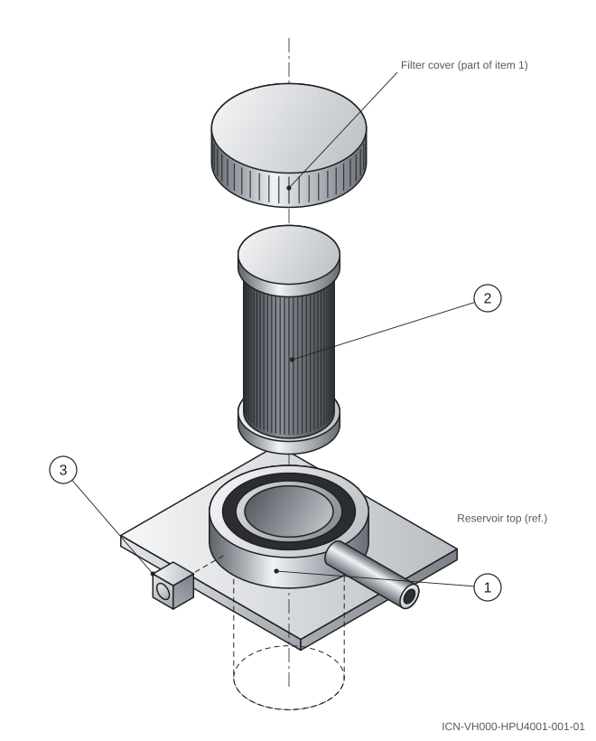

The return filter removes particles from the hydraulic oil before the oil goes back into the reservoir. Clean oil decreases wear in the pump and the valves.
The return filter is installed on the top of the reservoir. The return hose from the manifold connects to the inlet port of the filter housing.
The figure shows the components. The item numbers refer to the figure.

The return filter has these components:
For the part numbers and quantities, refer to the illustrated parts data: Return filter: Illustrated parts data.
Oil flows into the filter housing through the inlet port. The oil goes through the filter element from the outer side to the inner side, and then flows down into the reservoir.
When particles collect in the filter element, the differential pressure across the element increases. At 1.2 bar, the clogging indicator changes from green to red. Replace the filter element when the indicator is red.
If the element is not replaced, the differential pressure continues to increase. At 1.7 bar, the bypass valve opens, and unfiltered oil flows into the reservoir.